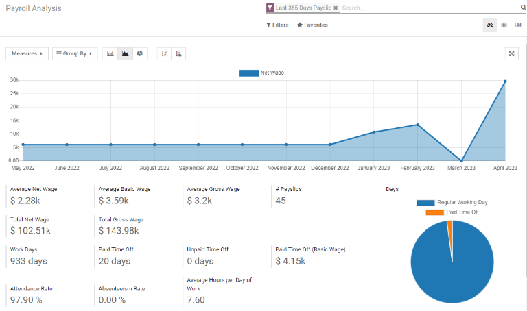
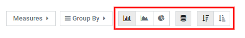
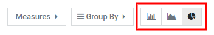
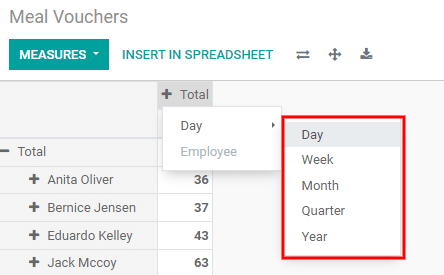

Reporting¶
The Reporting section of the Payroll app offers a variety of reports to choose from. The Payroll, Meal Vouchers, Attachment of Salary, and DMFA reports are universal and available for all companies regardless of location. The Paid Time Off Allocation, 273S Sheet, and 274.XX Sheets reports are specific to Belgian companies only.
To view a report, go to and click on the specific report.

If a report is unavailable to a company, a user error pops up, stating You must be logged in to a
Belgian company to use this feature.
At the top of each report, click on Filters to display the optional filters for the specific report. Filters show information that matches the specific filter parameters. For example, when selecting the Last 365 Day Payslip filter, only payslips for the last 365 days appear. All reports have the option to add a custom filter, and each have different default custom filter options. Select the parameters, then click the Apply button.
Clicking on Favorites displays three options: Save the current search, Add the search to the dashboard, or Insert the search to a Google spreadsheet.

Payroll¶
Click on to display the Payroll Analysis report.
This shows all the payslips generated in the last 365 days. The report can display metrics for a variety of parameters. Click the Measures box to view a drop-down menu with the various options to display. The options available include: # Payslip, Basic Wage, Basic Wage for Time Off, Days of Paid Time Off, Days of Unforeseen Absence, Days of Unpaid Time Off, Gross Wage, Net Wage, Number of Days, Number of Hours, Work Days, Work Hours, and Count.

Line chart¶
A line chart is the default view for the Payroll Analysis report. If a different view was selected, click on the Line Chart icon (middle icon) in the menu bar to change the view back to a line chart. An option to display the line chart in ascending or descending order appears at the end of the options.
Bar chart¶
To display the data in a bar chart, click on the Bar Chart icon (first icon) in the menu bar.
Click the Stacked icon to view the bar chart in a stacked format (where multiple values appear in each column). An option to display the columns in ascending or descending order appears at the end of the options.
Tip
Clicking an option enables it. To disable the option, click it again. When the option is enabled it appears grey. When it is inactive, it appears white.
Pie chart¶
To display the data in a pie chart, click on the Pie Chart icon (last icon) in the menu bar. There are no additional options available in this view.
Pivot table¶
The bottom half of the Payroll Analysis dashboard presents a pivot table no matter which type of chart is selected for the top of the dashboard. The default information displayed is the number of payslips, net wage, gross wage, days of paid time off, and days of unpaid time off. The information is divided by department. To display more information on the report, select the Measures drop-down menu, then click on any other items to display.

To sort the entries by a specific column, such as Net Wage, click on the column name twice. The first click selects the column, and the second click sorts the information in descending order.
To export the data in an XLSX format, click the Download xlsx icon. The information will be downloaded into an Excel spreadsheet.

The data can be inserted into a spreadsheet by clicking the Insert in Spreadsheet button. A pop-up appears asking which spreadsheet to place the information in. Select an existing spreadsheet or enter the name for a new spreadsheet. Click the Confirm button to move to a spreadsheet view with all the information populated.

Once in the spreadsheet view, click on File, then select Save to save the data, or Save as Template to save the setting as a template to use in the future.
Note
The Documents application must be installed in order to use the Insert in Spreadsheet option.
Meal Vouchers¶
Meal Vouchers provides an overview of the meal vouchers used by employees, and can be shown by Day, Week, Month, Quarter, or Year. The default view is by month.

To change the displayed view, click on Total. The data collapses, showing only the count column. Click on Total again, then hover over Day, then click on one of the other time-period options available.
It is possible to compare the current meal voucher report to the one for the previous time period or the previous year. To view these comparisons, click on the Comparison drop-down menu at the top, then select either Date: Previous Period or Date: Previous Year.

To export the data in an XLSX format, click the Download xlsx icon. The information will be downloaded into an Excel spreadsheet.

The data can be inserted into a spreadsheet by clicking the Insert in Spreadsheet button. A pop-up appears asking which spreadsheet to place the information in. Select an existing spreadsheet or enter the name for a new spreadsheet. Click the Confirm button to move to a spreadsheet view with all the information populated.
Once in the spreadsheet view, click on File, then select Save to save the data, or Save as Template to save the settings as a template to use in the future.
Note
The Documents application must be installed in order to use the Insert in Spreadsheet option.
Attachment of Salary¶
The Attachment of Salary report shows all deductions or allocations per employee, such as child support payments and wage garnishments.

The employees are listed in the left-side column, while the different deductions are listed in the top row, organized by month.
The report can be exported as a XLSX file, or inserted into a spreadsheet, using the corresponding buttons at the top.
Clicking on the Measures button shows options for how the data is displayed. Assignment of salary, Attachment of salary, Child support, and Count, can all be selected or deselected by clicking on the item. If an item has a check mark, it is displayed.

The salary attachment report can be compared to the one for the previous time period or the previous year. To view these comparisons, click on the on the Comparison drop-down menu at the top, then select either Payslip End Date: Previous Period or Payslip End Date: Previous Year.